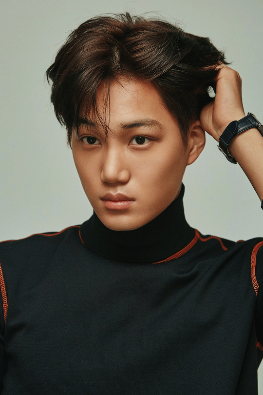
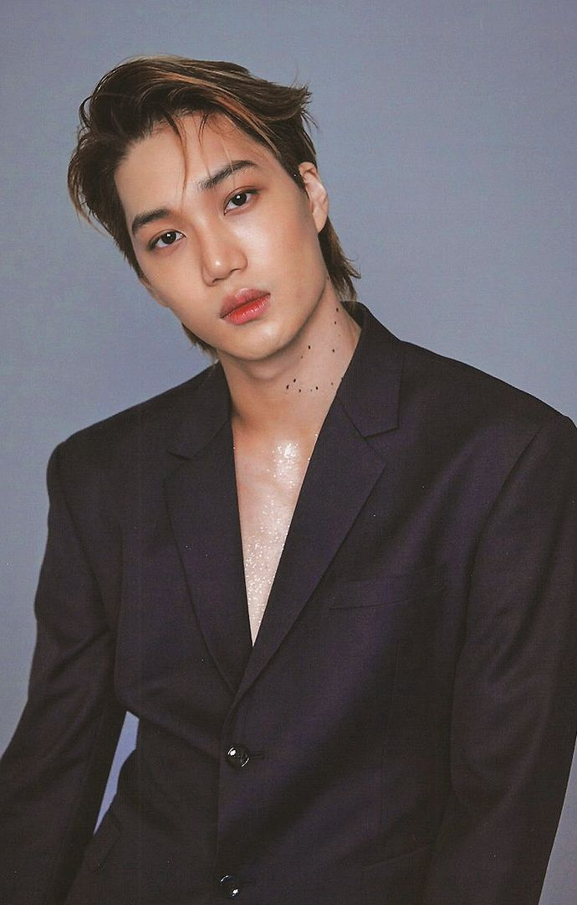
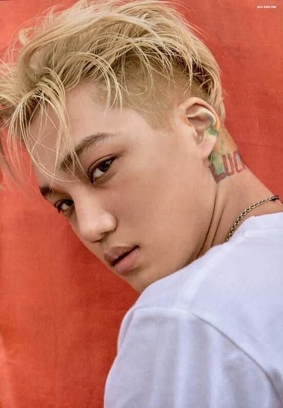
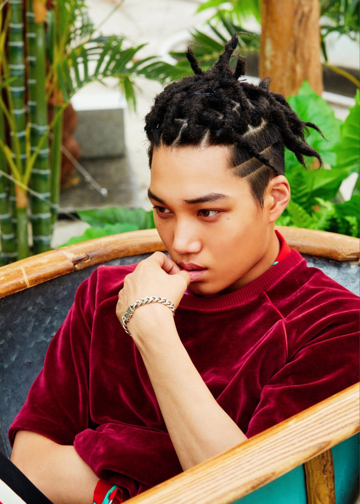

Я вітаю тебе на цій сторінці про популярну корейську
группу ЕХО, залишайся з нами:)

Я вітаю тебе на цій сторінці про популярну корейську
группу ЕХО, залишайся з нами:)
| Псевдонім | Кай |
| Справжнє ім'я | Кім Чонін |
| Родився | 14 січня 1994 року |
| Родом з | Сунчхон, Південна Корея |
| Ріст | 182 см |
| Група крові | А |
Кім Чонін (кор. 김종인, англ. Kim Jongin),
народився 14 січня 1994 відомий під сценічним псевдонімом Кай (кор. 카이). Південнокорейський співак, актор, модель і танцюрист. Є учасником південнокорейської групи EXO, її корейської підгрупи EXO-K і супергрупи SuperM.
Кай також знявся в різних телевізійних серіалах. 16 вересня 2019 року Кай
став першим в історії корейським послом і обличчям модного дому Gucci. В грудні 2019 вийшов короткометражний фільм від VOGUE, GQ і GUCCI
«Артисти». У цьому фільмі Кай занурювався в своє минуле, показав з чого починався його шлях артиста, хто йому допоміг.
   